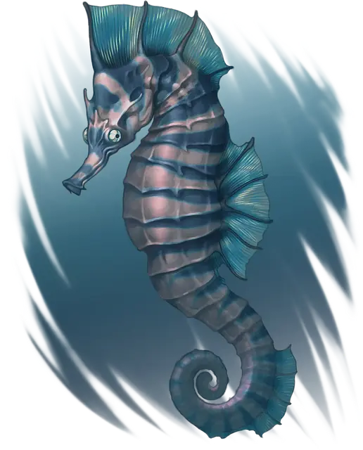

Морской конёк
Seahorse
Крошечный Зверь, без мировоззрения

Класс Защиты 12 Инициатива +1 (11)
Хиты 1 (1к4 - 1)
Скорость 5 футов, Плавания 20 футов
| мод | спас | ||
|---|---|---|---|
| СИЛ | 1 | −5 | −5 |
| ЛОВ | 12 | +1 | +1 |
| ТЕЛ | 8 | −1 | −1 |
| мод | спас | ||
|---|---|---|---|
| ИНТ | 1 | −5 | −5 |
| МДР | 10 | +0 | +0 |
| ХАР | 2 | −4 | −4 |
Чувства пассивное Восприятие 12
Языки нет
Опасность 0 (0 опыта; БВ +2)
Особенности
Подводное дыхание. Морской конёк может дышать только под водой.
Действия
Пузырьковый рывок. Находясь под водой, морской конёк перемещается на расстояние вплоть до своей Скорости плавания, не Провоцируя атак.
Бонус мастерства +2